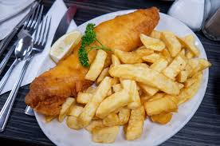

Fish and Chips

Description
Simple fish and chips made with cod fillets and twice-fried fries.
Tastes great as-is or with malt vinegar, lemon, or tartar sauce.
Ingredients
- 4 large potatoes, peeled and cut into strips
- 1 cup all-purpose flour
- 1 teaspoon baking powder
- 1 teaspoon salt
- 1 teaspoon ground black pepper
- 1 cup milk
- 1 egg
- 1 quarter vegetable oil for frying
- 1 1/2 pounds cod fillets
Directions
- Make the chips by slicing and frying the potatoes
- Make the batter by mixing the flour, baking powder, seasonings, milk and egg
- Dredge the fish in batter
- Fry the fish until golden brown
- FRy the potatoes a second time, then serve alongside the fried fish